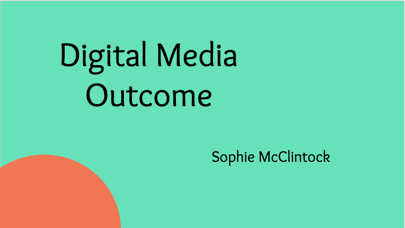
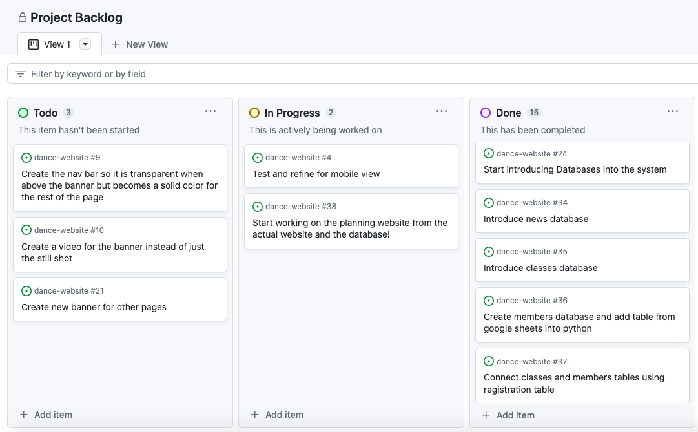
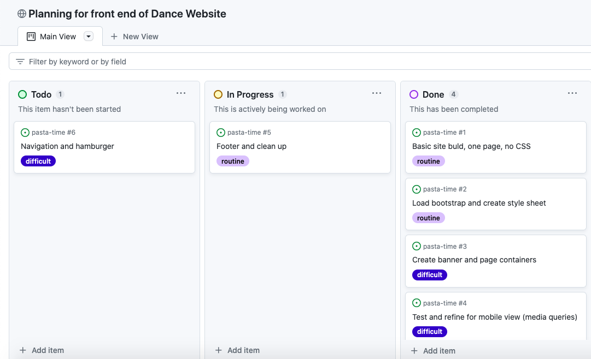
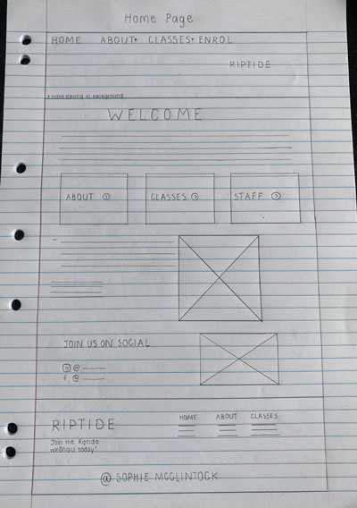
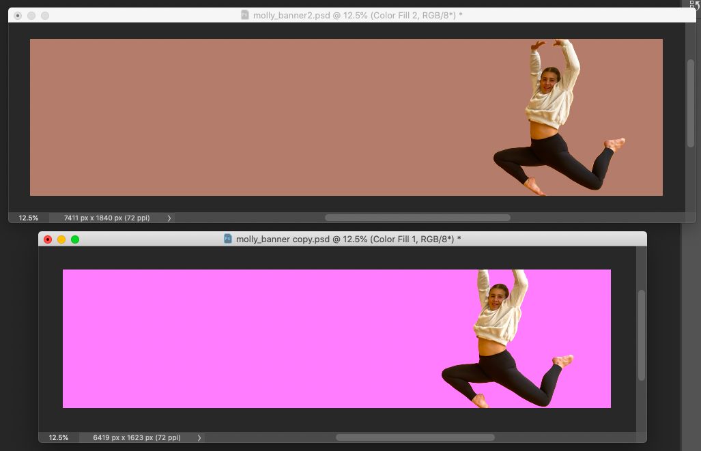
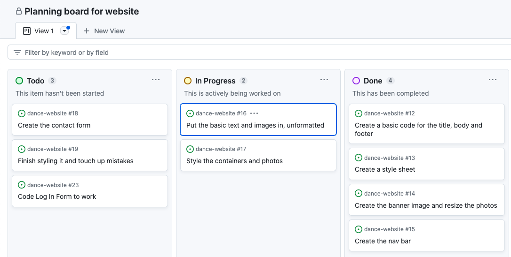
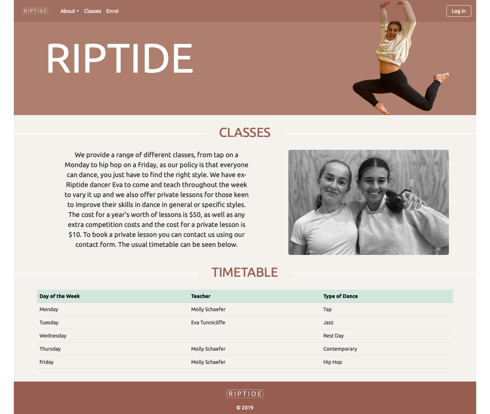
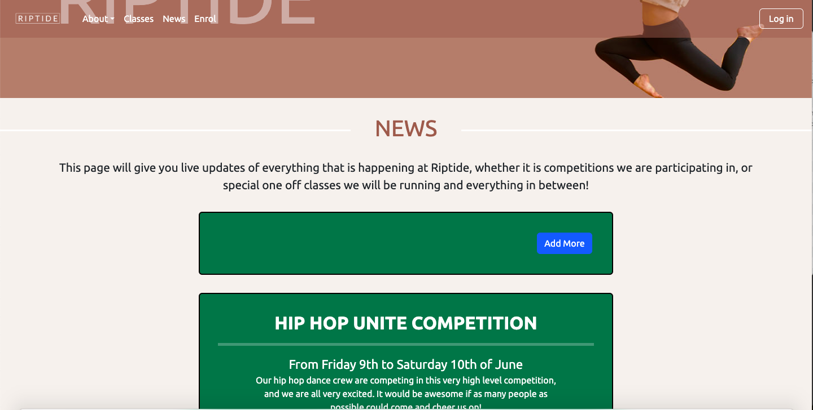
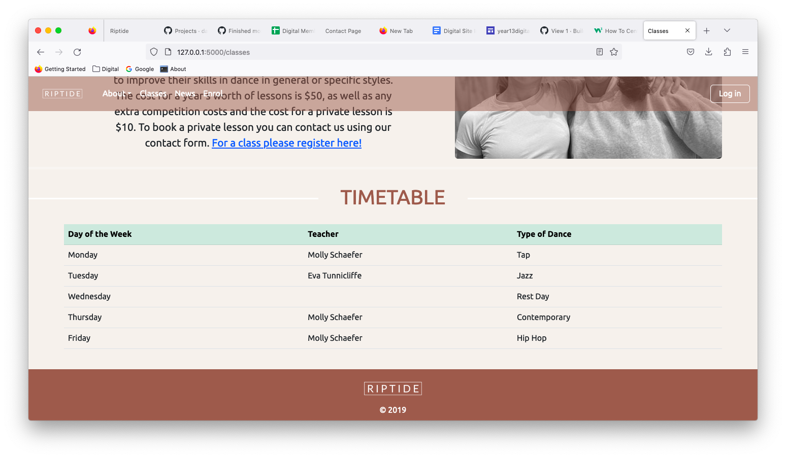

Website Planning
Live Website (more about this below)
Link to live websiteBrief
My brief is to create a website for the school dance team at Samuel Marsden Collegiate School, named Riptide, to display their information. The purpose of the website would be to inform students about the dance team, the teachers involved, what classes they can get involved in, when the classes take place and how they can get involved. It would also have a news page with all the upcoming events that can hopefully be updated. The interface and design should perform well on both computers and mobile phones. In conversation with the key dance leader, Molly, she wanted to ensure that the website was aesthetically pleasing as well as having a more complicated section, where students could enrol and register for what classes they are keen to join that is easy to navigate. This meant that it was imperative that I created an equally comprehensive front-end and back-end to the database. Throughout this process, Molly will be providing me with regular feedback to ensure that the end product is to her satisfaction. Before starting the website, I completed some User Experience (UX) studies. This involved:
- - Making user personas for the type of people that would be using this website and the kind of experience that they expect when they are on the website
- - Competition Analysis to get a sense of the design and features of similarly used websites
- - Information of my Stakeholder, Molly Schafer, the leader of the dance team
- - Prototypes and Planning as well as Photos for Inspiration
More information for this is in the slides below.
Link to user experience planning
Project Backlog
Previously, I had decided to follow Agile design principles while designing my website which was one of the reasons why I created the slideshow above, with the user personas, competition analysis, and stakeholder information. Another aspect of Agile is a Project Backlog and sprint planning boards to help with the planning on the website. To start off my website, I decided to create a project backlog to help me decide where my priorities lie while creating the website and the database. Below is a screenshot and the link to my project backlog
This is the link to the project backlog Describing Relevant Implications
Privacy
Privacy is just about making sure that the information of the members is secure. For example, other users should not be able to view others personal information such as their phone number or email address. It also means only collecting the necessary information when they are enrolling in the dance school. Passwords also need to be secure and different for each person.
Functionality
Functionality means that the database works properly. It should be error free and easy for a developer to write queries for it. It is making sure that the sql queries work and the data is of a consistent format between different cells in the same column. Foreign key references also need to be correct so that the correct member is associated with the correct class or news item that they have posted. The best way to check the functionality is to create test queries and regularly test everything in the website to make sure it is easy to use.
Sustainability and Future Proofing
This means make sure the database is sustainable or able to be used in the future by different people other than me. This requires me to lay everything out so that it can be updated really easily. For example, when I am making tables, I am ensuring to label everything with clear titles. It is also ensuring that all the foreign key references are working so that if you are updating their information, it will automatically appear in the correct of the other table, there is no need to update the information in more than one place.
End User Considerations
In general, this means making sure that the website is presented in an efficient and organised manner that caters to the users needs. It should be formatted to meet the users expectations of what a modern website should look like. This means that in forms you should be able to add, update and delete easily so that errors and minor mistakes can be avoided as much as possible.
Accessibility
Accessibility is about making the website more accessible for people who may be at a disadvantage when it comes to using the site. This includes making sure it can be easily used on a mobile device, using things like hamburger navigation etc. Another way a site can be made more accessible is by adding alt tags to the photos that I had added to my website.
Sprint One
This sprint consisted of designing the home page and making sure that everything worked. I had already made a plan, which I have inserted below, but I wasn’t sure of the colour scheme that I wanted, I was just keen to play around with different colours. This included a lot of trialling to see which colours work best together and how the text formatted best. I made sure to get a lot of feedback on the colour from Molly to make sure that she was happy with the decisions being made. Another big thing that I had to do before starting to create the website, was to do a photo shoot to get all the photos that I needed. I decided to do one with my friends in the school gym, then I did one at home with my sister. I just took a lot of photos from different angles, and in different places then later I went through and sorted them all out. I didn’t have the best equipment, as I just used my phone, but I ended up making the decision to make all the photos black and white, so it didn’t really matter in the end.
Planning board for front-end design of website
I made a planning board for the front-end of the website to make sure that the website had everything that I wanted. A screenshot of this and the link to access it is below:
This is the link to the planning board Plan for my first page
Design Trials
It took me a while to decide on both the photo and the colours that I wanted my banner to be, below you can see some of the options of the different colours that I looked at. I eventually settled on the pinky colour, because I thought that it worked better with a wider variety of colours.
As you can see in the video below, this was a bit of a improvement on my plan for my first version. I decided to remove the section about social media and replace it with a contact form so that the users would easily be able to get in touch with the teachers. There is a mistake, when I went into mobile view, the banner did not adjust correctly, but this was something that was not too difficult to fix, which was good! From this video, I was able to discover the error and make changes to the colours that I did not think worked very well. I also decided to put the quote in the banner, instead of just below as it made the site look a bit more professional.
Interesting style code
Below I have pasted some of the more difficult style code. This particular code was to style the h1 text with the line on either side of the text. I have inserted an image of the particular element below, so you can see the code and the outcome.
/* line behind titles */
h1 {
border: 0px solid red;
padding:0;
overflow: hidden;
color:rgb(150,93,80);
/*font-weight: bold;*/
display: table;
white-space: nowrap;
margin: 0.75em 0;
}
h1:before, h1:after {
border-top: 3px solid rgb(255,255,255);
content: '';
display: table-cell;
position: relative;
top: 0.65em;
width: 50%;
}
h1:before { right: 3%; }
h1:after { left: 3%; }
Reflection
Sprint One, as I mentioned above, consisted of a lot of testing and making sure that everything was working. The main issue that I came across was that the banner did not resize correctly when the page was in mobile view mode. It was really helpful to get familiar with Bootstrap 5 and play around with all the features. Overall, Sprint One took quite a long time because of all the little things that I had to make sure that I understood but in the end, I was a lot more knowledgeable and confident with the software.
Sprint Two
Planning Board for Sprint Two and Three
This is the link to the planning board For Sprint Two, I had pretty much finalised my design, just had a couple of other changes to make. So, I decided to start creating the other pages, including the classes, and news page, without the databases. This means that I was just creating the base framework for these pages so that I could build on them. Below, you can see my rough plan for the about and classes pages, I wasn’t sure entirely what I wanted to do but this was just a rough idea.
Below you can see a screenshot of my first version of the classes page. This was before I decided to add a database to the page, it is the first version
Reflection
Upon completion of Sprint Two, I had created all my pages to a certain extent, but they had not been connected together, so this was my task for Sprint Three. I knew I had to incorporate Python Flask so that the pages could have the same layout and link together via the navigation bar. I knew that I still had a few touch-ups to do in relation to the design of the pages, but I figured that that would happen naturally when I was creating the databases further on in the project and because I didn’t have heaps of time, I didn’t want to spend lots of time fixing this up when there were other things that needed to be done.
Sprint Three
For Sprint 3, I started to incorporate Python Flask into the website. This consisted of creating a basic server.py file and a layout file to base the templates of each page off. As you can see in the screenshot below, this is what the classes page looked like as a template before I added the code that I had previously created. The layout file consists of the banner, navigation bar and footer. By incorporating Python Flask, I was able to connect the pages easily and get the navigation bar working as well as having each page look similar, so that it was obvious that they were all part of the same website.
Below you can see a screenshot of what each template looked like before the code was added:

Following on from this, I decided to create the news page, with news items that could not be updated because I had not created the database yet. It took me a while as I played around with the colours, below you can see one of the colour decisions that I tried out and that did not really work. After having compared these two colours, I realised that they did not work and I had to try out some different options. The buttons that you can see in the screenshot below did not work.
Below you can see the basic code for the server.py file. You can see the code for the index, about, classes and enrol pages.
from flask import Flask, render_template
app = Flask(__name__)
@app.route('/')
def index():
return render_template("index.html")
@app.route('/about')
def about():
return render_template("about.html")
@app.route('/classes')
def classes():
return render_template("classes.html")
@app.route('/enrol')
def enrol():
return render_template("enrol.html")
Reflection
Sprint Three was quite difficult because I had to incorporate Python Flask, which was a bit more complicated. But, once I had it working, it was a lot easier, because I could just paste the code that I had already created into the templates. My next step is to start creating the database. I will start with the news database, because I have already created a template for that.
Database Plan
Brief
Before starting the database, I had already created and styled the website that I was going to base my database off. My aim at the end of this project was to include two or three database tables in my website that people could interact with.
Database Project Backlog
This is a screenshot of the overall project backlog that I made for the database section of this website. It is taken half way through the project, more specifically when I had just started the classes database.
This is the link to the database project backlogOverall Plan
Below you can see my overall plan for the database section of this website. The news, classes, member and contact databases are all quite similar, while the registration page is quite different. The registration table will be used to connect the classes and member database.
Sprint Four
Sprint four for the database consisted of creating a page on the website that I intend to turn into a database. For my website, I decided to start off by creating a database based off a news page where people could get information about what is happening at the dance school. I started off with creating the page and putting some styles in to make it look a little bit nicer because this would make the process of creating the actual database a lot easier! Then I imported the db_functions file that had already been created, and set up the news and members table in the create_db sqlite file. Once everything was ready to go, I actually ran the code and the database was created with just the two tables.
News Database Planning Board
This is a screenshot of the planning board I made to create the news database.
This is the link to the news database planning boardThe plan for the news and members table

The members and news table in the create_db sqlite file
As you can see in the screenshot below, I have created the two tables, members and news based on the plan above. I also added a foreign key reference at the bottom of the news table to connect member_id in the members table (which is the primary key) to the member_id in the news table(which is the foreign key).

Testing for the first sql query for Sprint Four
This particular sprint was about combining the member and news tables so the user could see the information on the news item and who posted the information. As can be seen in the run box below, we can see the description of what each thing is, followed by what it actually is. For example, you can see that it tells us that HIP HOP UNITE DANCE COMPETITION is a title to the news item. This is a really helpful test because it helps me make sure that the correct values are coming out under the correct section.
After doing this test I implemented it into the code in the actual html file. The first code that you can see below is what I put into the server.py file, it is just the general sql query. Then I edited the news website, which was previously just 'front-end' (which means the html and styles have been worked out but the buttons are no functional). This involved making the buttons functional, for example being able to add more news items, delete them or update the contents of them. The second piece of code that you can see below is the code on the actual news website page. Because it is 'for row in news', this means it will automatically print out all the news items that are currently in the database.
def news():
sql = """select news.news_id, news.title, news.subtitle, news.content, news.newsdate, member.name
from news
join member on news.member_id= member.member_id
order by news.newsdate desc;
"""
result = run_search_query_tuples(sql, (), db_path, True)
print(result)
return render_template("news.html", news=result){% for row in news %}
<div class="news rounded">
<h4><b>{{row ['title']}}</b></h4>
<hr>
<div class="subtitle">{{row['subtitle']}}</div>
<div class="news-text">{{row['content'] | replace("\n", "<br>") | safe}}</div>
<br>
<div class="row">
<div class="col-lg-6"><div class="news-subtext text-start">Posted by {{ row ['name']}} on {{ row ['newsdate'] | news_date }}</div></div>
<div class="col-lg-6 text-end">
<a class="btn btn-primary" href="{{ url_for('news_cud', id=row['news_id'], task='update') }}">Update</a>
<a class="btn btn-primary" href="{{ url_for('news_cud', id=row['news_id'], task='delete') }}">Delete</a>
</div>
</div>
</div>
<br>
{% endfor %}After doing this test, I had the general information for the news page but I still had to work on the update, delete and add side of the page and seeing as this included quite a lot more sql queries, I had to do a bit more testing. It was definitely a bit more difficult as I had to transfer what had already been recorded on each news section and then work out how to update it in the table. Below you can see a video of me testing the update, delete and add sections of the database to make sure that everything is working.
Video of running through the news update, delete and add.
Reflection
Overall I am pleased with the progress from Sprint Four, I managed to pretty much create my first database based off the news page. It was a bit of a challenge starting everything up but the first time is always going to be difficult, so hopefully it will get easier with time! I got my testing.py page up and running, which will be helpful when I am testing my sql queries before I put them into the actual website/database.
Sprint Five
Before doing the classes database, I had originally only created a timetable on my classes page. So, there was no information about each class but I decided that this would be useful for the people considering what class to join. Below you can see the screenshot of what the classes page looked like before I added the database. In Sprint 3, you can see a video that shows what the classes page looked like after the classes database was almost complete.
In this sprint I decided to add another database based off my classes page. As you can see in the screenshot above, I had already made the classes page for the website. I did change it a bit, as I mentioned above, I added information about each class and did all the styles, in quite a similar fashion to the layout of the news database. A lot of this database was actually quite similar to the news database so a lot of the code I just copied through and changed for the classes page.
Classes Database Planning Board
This is a screenshot of the planning board I made to create the classes database.
This is the link to the classes database planning boardThe plan for the classes table added onto the other two tables
The classes table in the create_db sqlite file
This sprint just required me created one more table, the classes table as seen in the screenshot below. I used the plan above and as with Sprint Four, I also added a foreign key reference at the bottom of the classes table to connect the member_id in the members table (which is the primary key) to the member_id in the classes table (which is the foreign key). Below the table you can also see some of the inputs that I have put into the classes table, the Jazz, Contemporary, Tap and Hip Hop classes and the content to tell people what each of these styles are.
Testing for the first sql query for Sprint Two
This test is very similar to the news test, it involves combining the classes and member tables so they can run together. Again, as you can see in the ‘run’ area below there are the values for each class, the title, the content, and the image. All the update, delete and add more information was very similar to the news database so I did not really have to do anything new.

Reflection
Like I have said a few times, this was quite an easy sprint because I just copied a lot of the information over from the news database. I changed the layout of the classes page a bit and I am happy at how it looks now. My next step is to add the session information and organise the log in, log out information. This will be really helpful because it means I can sort out who has the authorization to add new news items and add people to classes etc.
Sprint Six
For this sprint I put the databases on hold for a second and added the sessions and log in and out functions. I started by setting up the log in and log out and making sure that worked. Then I added the session to all the pages that needed it, like the news page and classes page. This meant that if someone was in session (logged in) and had a certain authorisation, they could add new items and add different students to the class. This authorisation is mostly reserved for the teachers or anyone else high up in the dance school. When anyone is in session (logged in), despite their authorisation, the ‘log in’ in the corner would change to a log out and we would be able to see who was logged in, what their member_id was and what their authorization was.
Below you can see a video of me testing to check if the sessions and log in/log out was working
Reflection
This sprint was a little bit more difficult as I had to work around the databases and make sure that it worked no matter who was signed in and the different authorization gave you access to different things. The next thing for me to do is create a registration table that links the classes table and the member table.
Sprint Seven
In this sprint, I created a registration table that connected the classes table to the members table so that people could be enrolled in different classes. This involved creating a google sheets table and importing it into Pycharm so that I didn’t have to write out every single entry and could just get the information from the table. I knew that this sprint would be a bit more difficult as it would include a few more pages, it meant the people who had an authorisation of 0 (the teachers at the dance school) would be able to view who was in the classes, and add people or delete people. I had to connect the members database to the classes database and add a datalist so that when the teachers were trying to add people to the classes, they could see who was a member in the dance school.
Registration Database Planning Board
This is a screenshot of the planning board I made to create the registration database.
This is the link to the registration database planning boardThe plan to connect the registration table to the other three tables
The registration table in the create_db file
Again, I created a registration table in the create_db file. I created a member_id and classes_id so that I could connect each member to a particular class. The foreign keys each connected to a different table, the member_id in the registration table connected to the member_id in the member table and the classes_id in the registration table connected to the classes_id in the classes table. On the members table in the google sheet that I had previously put in the database, I had written what class each person was in so this connected to the registration table.
Code for registration on layout.py
Below you can see the code for the registration table in the layout.py. Included in this code is a query ensuring that the teachers can delete people from the classes and add people to the classes. The query after the delete query is making sure that the teachers can see who is registered in each class and then the next query is making sure when the teachers are trying to add people, they can see everyone in the member database. I also had to put in an error message in case the teachers tried to add someone who was already registered in the particular class.
def registration():
data = request.args
print(data.keys())
if request.method == "GET":
if 'task' in data.keys():
if data['task'] == 'delete':
sql = """delete from registration where member_id = ? and classes_id = ?"""
values_tuple = (data['member_id'], data['classes_id'])
result = run_commit_query(sql, values_tuple, db_path)
print('delete')
print(result)
else:
return render_template('error.html' , message="Registrations task not understood")
sql = """select m.member_id, m.name, m.email
from member m
join registration r on m.member_id = r.member_id
where r.classes_id = ?
order by m.name asc"""
values_tuple = (data['classes_id'],)
result = run_search_query_tuples(sql, values_tuple, db_path, True)
sql = """select m.member_id, m.name, m.email
from member m
order by m.name asc
"""
memberset = run_search_query_tuples(sql, (), db_path, True)
return render_template("registration.html", registration=result, memberset=memberset, classes_id=data['classes_id'])
elif request.method == "POST":
f = request.form
if data['task'] == 'add':
sql = """insert into registration(member_id, classes_id)
values((select member_id from member where name = ?), ?)"""
values_tuple = (f['student'], data['classes_id'])
result = run_commit_query(sql, values_tuple, db_path)
if result is False:
message = "Failed to add, most likely the member is already registered"
return render_template("error.html", message=message)
return redirect(url_for('registration', classes_id=data['classes_id']))
else:
return render_template('error.html', message="Registrations task not understood")
else:
# return the page with an error message
message = "Unrecognised command coming from news page"
return render_template("error.html", message=message)While completing Sprint Seven, there was one particular error that I found really difficult to fix. As you can see in the screenshot below, there is a ‘search’ button for adding current members to the different classes. But, I had originally done two different queries, one for selecting the people who were already in the class, so they could be named above when the teachers were looking at registrations, and one selecting all the members so anyone could be added to the class. But, it was only picking up the first query so the only members that I could add to the class were people who were already in the class, which was obviously not ideal. I fixed this error by naming the second query, ‘memberset’. This meant I just had to be careful and make sure that I was ‘calling’ the correct query. The second issue is what you can see in the first screenshot, if someone had been added to more than one class, like Adia in this example, their name would come up twice. I fixed this by making sure that the name in the member_table, which is where these names were selected from, was unique so that when they were added to a class, they would not be added to the member table again, causing their name to come up twice. I then had to make sure that on the registration table, the member_id was not unique so that people could be added to more than one class. The first screenshot below shows the second issue of the repeated names. The second screenshot shows my code when I had names both the queries the same thing, and the third screenshot is showing the fixed version, when I named the second query memberset instead. You can see a bit further down in the video that the issue of members names coming up twice had been fixed.
Below you can see a video of me testing out the code above and making sure the teachers can see everyone who is registered in each class as well as delete and add people to different classes.
Reflection
This sprint was definitely a little bit more difficult because it required connecting the tables quite a bit more, in the queries and within the tables themselves. It was also quite different from the other two databases, which were quite similar to each other. But, I am pleased with the result, it is really good being able to add people from the members to the classes, it adds a new dimension to the website/database.
Sprint Eight
For this sprint I created one more database based off the contact forms and touched up lots of little things in the other databases. The contact database was pretty much exactly the same as the news and classes database. So that did not require too much work. I have already put a final plan of all the tables at the top of the planning site, so I have not put another one below. The contact table is not connected to any other table at the moment.
The contact table in the create_db file
Below you can see the contact table as well as an input that I have put in the contact table so that it is easy to test
Finalising and Testing
This testing was to make sure that the website worked on all different kinds of screens, including a computer screen, a mobile screen and one in the middle of the two. This was really important to me because I wanted to make sure that this website was easily accessible for anyone, no matter what device you were working on. I have taken screenshots of two pages and shown how they resize on the different sized screens. Below on the left, you can see how the About page changes as the page resizes and on the right, you can see how the Classes page changes as the page resizes. The top screenshots are taken on a computer view, the middle screenshots are taken on a slightly narrower view, that you might see if the page you were looking at was a bit smaller, and the last screenshot is taken on a mobile view.
Another part of my final testing was doing the Wave Test and the Pingdom test to pick up on any other minor errors. Below you can see screenshots of how my website performed in each test.
Pingdom Test
Wave Tests
Taking the site live
Taking the site live was a bit complicated. I worked through Python Anywhere, and I did most of the coding on a Bash Console. I had to first create a web application, then through the Bash Console, I copied the repository over and made sure it was all set up properly. It was definitely a bit complicated, but it was worth it, because obviously it is really cool that others can access it.
Overall Reflection on the Databases
Overall, the database was difficult to make and some things came out a bit differently to what I was expecting. But overall, I am happy with how the website runs, in my opinion it is easy to navigate and the databases make sense where they are. One issue was that for each new class that is created, there a photo attached to it, but I wasn’t sure what the best way was for the teachers to be able to put in a different photo via the website, so this is an issue that has not been fixed. This is something that I would want to do if I had more time. I would also like to implement a ‘roll’ idea to the classes/member database so that when the classes happened you could tick who came and who didn’t, and then you would be able to see how much each student has attended the particular class. Another thing that I would probably do if I had more time would create a way for the teachers to view more information about the members, for example, their birthday or year at school. This would be useful and seeing as it is already information that the members had to put in in order to enrol, it would not be too difficult to do. The last thing that I would put it is a remove button so you could remove people from the members database, say if they have left the school so are no longer dancing at the company. But, these are all things that would require a little bit more time and overall, I am happy with how much I got done.
Addressing Relevant Implications
Privacy
Privacy is not something that I have specially focused on while I have been creating this database. I have been doing lots of little shortcuts, for example giving everyone the same password so that it is easier for me to check everything works. But, if I was to focus on privacy a bit more I would ensure that everyone has a different password so people are unable to log into others accounts. I have made sure that only the teachers can access the member information and see who is enrolled in each class. When the students are enrolling in the school, they are only required to input the necessary information such as their name, birthday, year, and email and phone number so we could get in touch with them. I did not ask for their address as this was unnecessary in my opinion.
Functionality
Making sure my website was functional for me required lots of testing! I made sure to test after every sprint or every new thing that I had created so I could work out if there was an error relatively quickly. I also had to be careful and specific when I was doing certain things. For example, when I was transferring over the google sheets that had all the members, I made sure that the titles for the table I had made in the database previously were the same as the name of each column on the sheet. The sql installer file also helped me to set up the database so it was perfectly functional and I felt confident about making small changes during the development process. This file meant all the base information was already there and this made the general functionality a lot better. Wherever possible I also made the data fields for each different table unique and not null as this means any repeated entries or missed fields are picked up quickly during testing.
Sustainability and Future Proofing
One of the major things that I have done and am continuing to do to future proof my website, is to make sure as many things as possible are commented so that someone who is reading through my code can understand it. As I mentioned in the describing section, creating the foreign key references in the tables is also a form of sustainability because it means that you only have to update a particular reference in one place. For example, if someone’s name is changed in the members table, it will automatically change their name in the news table and the classes table.
End User Considerations
As a result of the database running through a website, for users to be able to understand and use the database efficiently, it needs to be laid out in a format that users would be familiar with, so similar to other websites. This means just simple things, like having a navigation bar at the top of the page so the users can navigate the page easily etc. It is important to have the different buttons (update, delete and add) on the forms so it is easy for the user to change the database. For example, the update button is a vital feature in case the user makes a typing mistake in one of the news items, or something like that, so that they are able to change it easily. Another important feature to have is error pages that tell the user the mistake they have made. For example, in my database when someone tries to add a student to a class that they have already been added to, an error message appears telling them pretty much exactly that, so they know what has gone wrong.
Accessibility
The main thing that fell under the accessibility relevant implication for me was making sure that it was easily accessible on a mobile device, because I knew that the majority of the people using the website would be students, so would be accessing it on their phone. Therefore, I made it a priority to make sure it was accessible on a mobile device, and I even did a final testing section in my planning, so I could see that everything worked. Through using Bootstrap, I was also easily able to add a hamburger navigation bar, which means that when the website resizes to a smaller size, the navbar collapses to form a hamburger navbar. This makes it more accessible because it means that there is less text on the page and it is easier to get around the website. Another way that I made it accessible to others was by creating alt tags for each image, so that if someone was blind, or the photos could not be accessed on their computer, there was a description of what each photo was of.